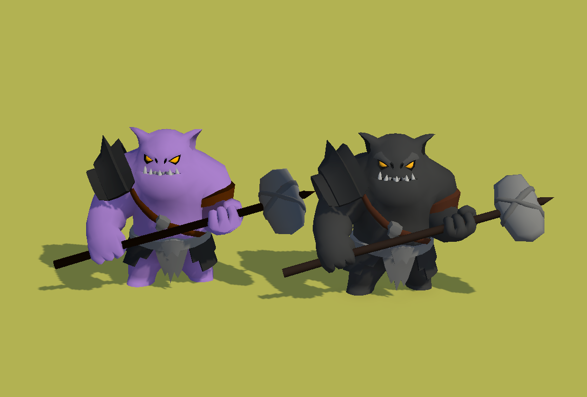
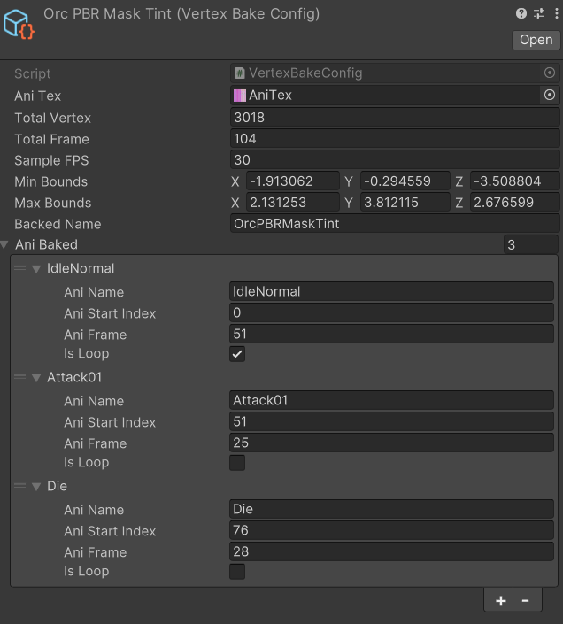
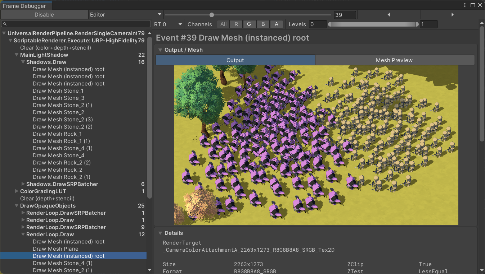
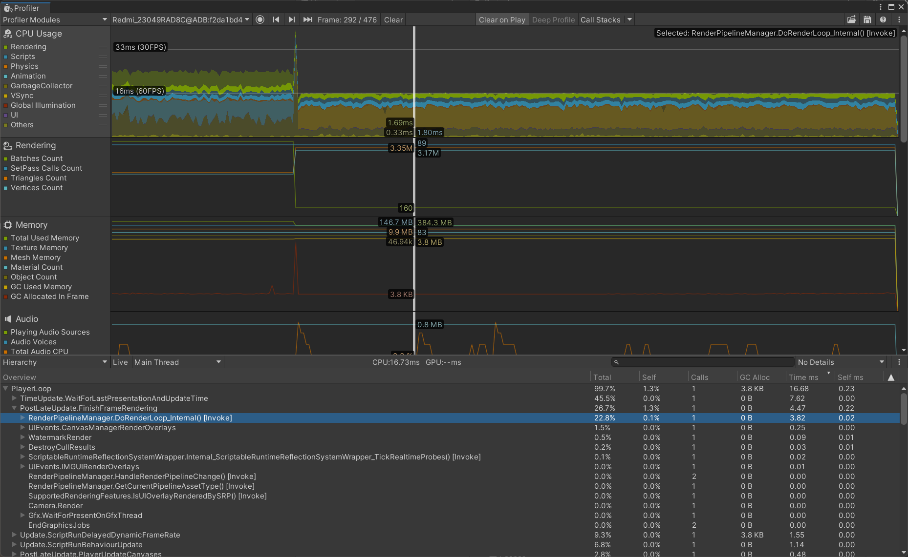
移动端 SLG 大地图大规模角色渲染与优化
项目简介：模拟移动端 SLG 大地图百人同屏场景，针对传统骨骼动画（SkinnedMesh）在移动端的 CPU 开销大、无法有效合批等性能瓶颈，通过开发 顶点动画烘焙工具链 与 轻量化模型扩张描边，在保证视觉效果的前提下实现的性能优化。
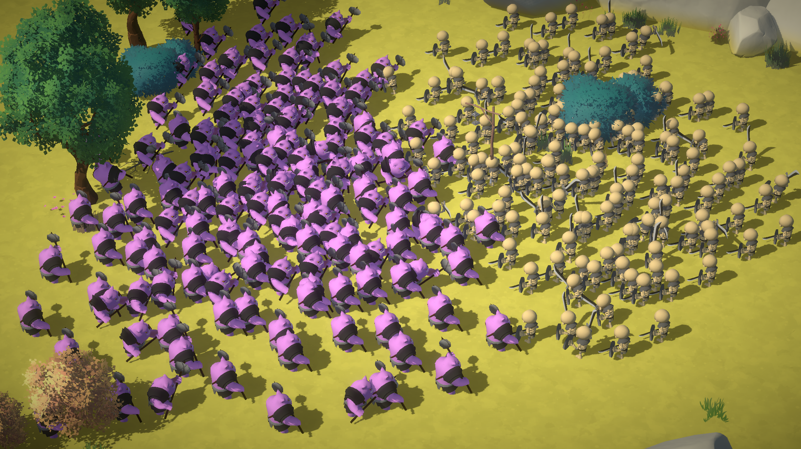
核心技术实现
1. 顶点动画烘焙工具链开发：编写 C# 导出工具，提取模型各动画帧的顶点位置偏移，并将其编码烘焙至一张 2D 贴图的 RGB 通道中。
GPU 着色器驱动：在 Vertex Shader 中根据当前时间与播放进度，采样 VAT 贴图并计算顶点偏移，实现纯 GPU 端驱动动画。
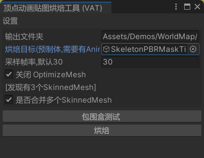
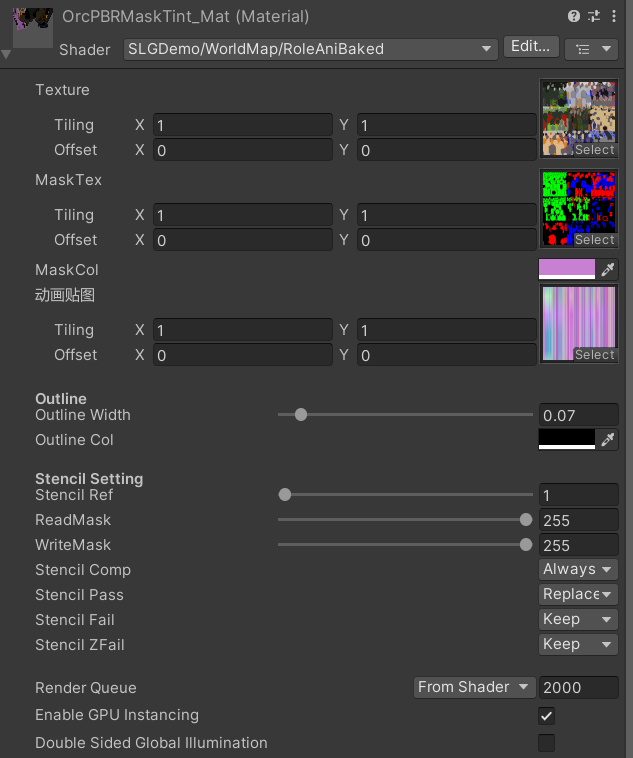
在 Vertex Shader 中沿顶点法线方向进行适度扩张生成背面描边层，结合模型本身完成轻量化描边。有一定视觉误差,大地图不需要特别精细的描边时可以使用,否则需要考虑烘焙法线或者转为骨骼烘焙,甚至考虑基于后处理的描边方案
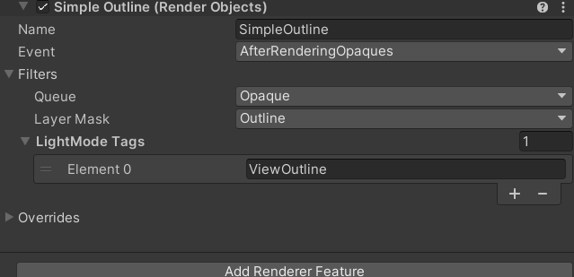
视觉与性能对比
1. 烘焙前后模型对比使用RGBAHalf格式,确保顶点精度足够，不会产生形变和动画瑕疵
同一类兵种将会合批
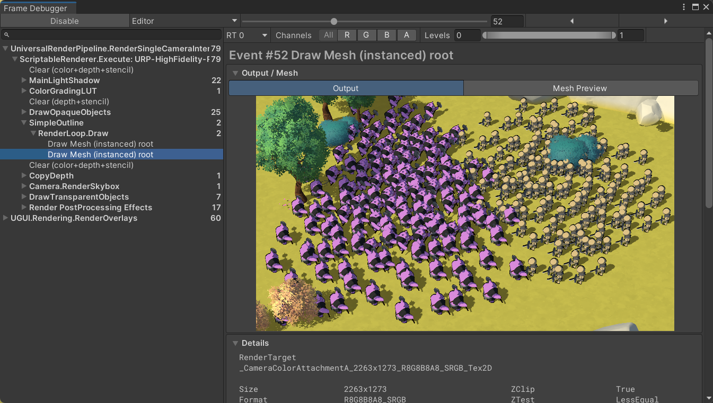
这款手机可以定位为高端机,所以测试数据为60FPS
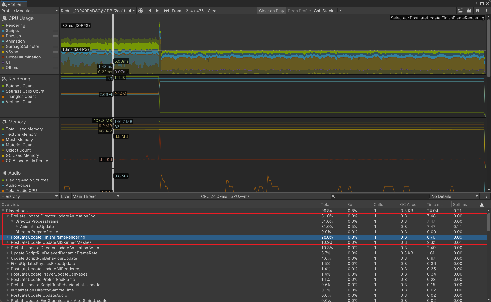
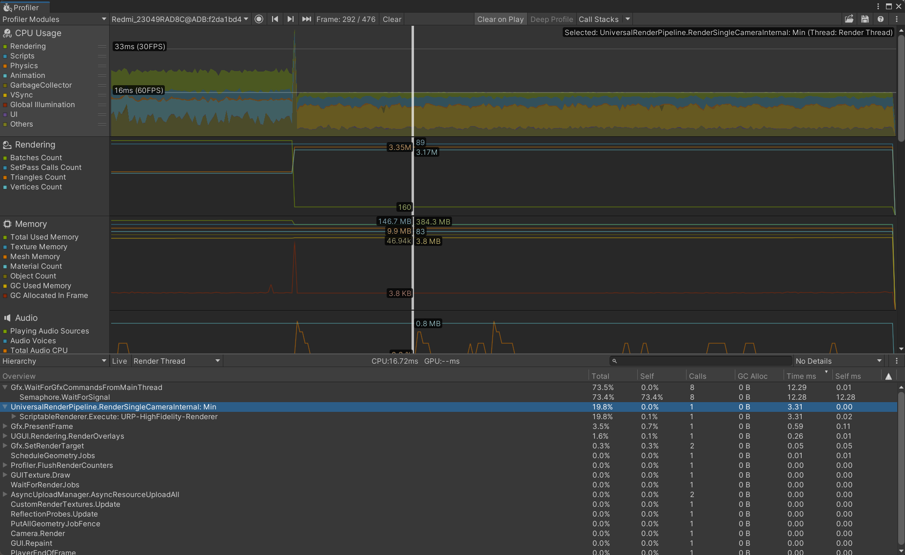
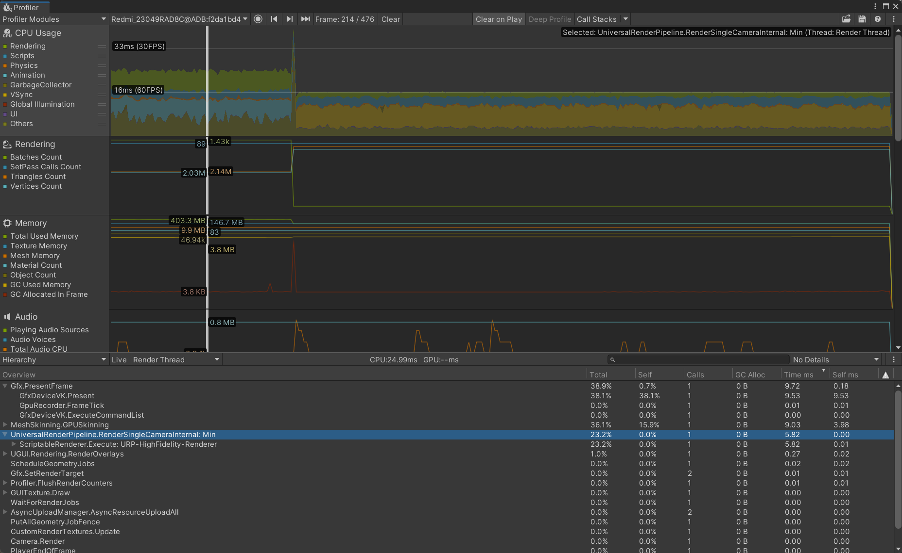
总结
1.传统 `SkinnedMeshRenderer` 依靠 CPU 进行骨骼蒙皮计算，巨量个小兵会导致严重的 CPU 耗时，且极难进行 Draw Call 合批,顶点烘焙极大地减轻了 CPU 开销并实现了极致合批，但牺牲了一定的贴图内存（Texture Memory）,在CPU压力巨大的时候较为适合
其他优化
1.为了节省带宽,没有烘焙法线到贴图,对于需要精确法线的方案时,可以考虑烘焙,或者更换为骨骼烘焙,取决于项目需要
2.方案对于做动画混合非常麻烦,对于有精确混合的英雄,可能还是考虑原始SkinnedMesh更为便利
3.目前使用自带MainShaodw渲染阴影,开销较高,如果对自阴影要求不高,考虑PlaneShadow投射阴影,优化带宽
4.SLG有根据镜头的LOD策略,在拉高后降低实际运算单位,显示单位合并等等优化方案同样有效
5.目前简单的逻辑使用MonoBehaviour驱动,考虑ECS处理大规模的战斗逻辑,进一步提升CPU性能
3.BatchRendererGroup解决多单位组件化问题,节省MeshRender消耗